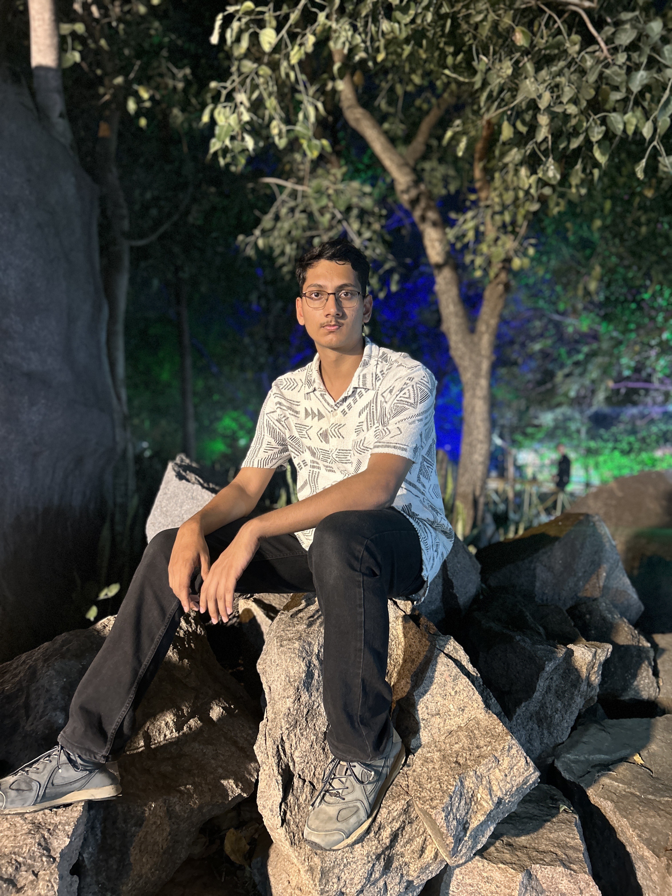

Hello! I am Sujay Belsare
I am pursuing a B.Tech in Computer Science Engineering at the International Institute Of Information Technology - Hyderabad (IIIT-H).
My current routine includes playing sports (mainly Tennis and Table Tennis), partying at DLF till 3 in the morning, and having late-night walks through the Hi-Tech city.
I love exploring new places and trying out new things, no matter how challenging they may be.
I am also very passionate about the field of computers. I am specifically intrigued by the domain of Robotics and Machine Learning.